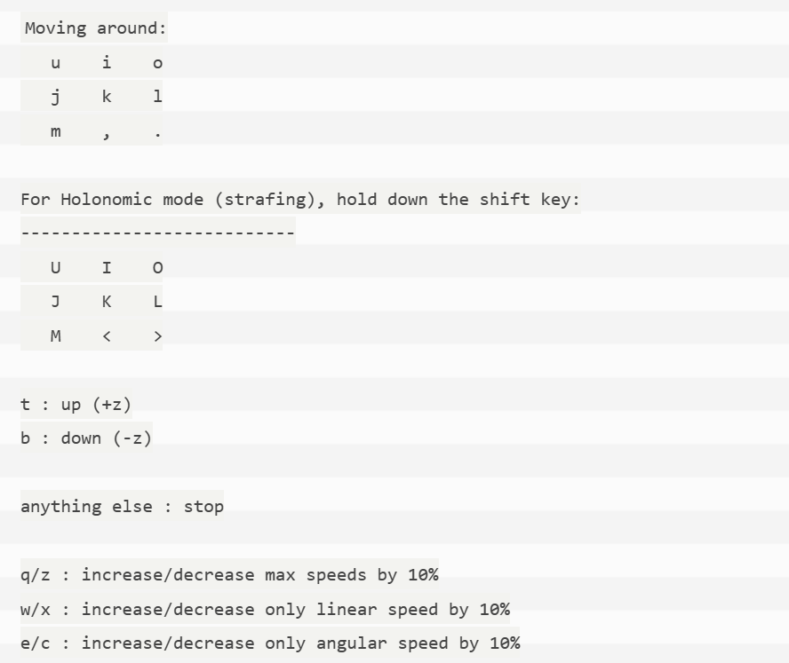

关于如何使用TB4机器人与该仓库代码
write by 2025.04.06 by luwei
本文记叙了一些如何入门创客智造TB4机器人、如何调试相机、运行ORB SALM的方法。
对应的代码仓库地址：Turbot4: ROS机器人Turbot入门手册，基于厂家教程整理 (gitee.com)
本仓库只列举了常用的指令与过程，有关的配置过程等请参考厂家文档。
有关雷达建图等指令见仓库的Turbot机器人入门手册。本文只是简要化的操作说明。
关于仓库代码结构
| Bash |
|---|
| ├── README.md
├── douji.py #舵机控制文件
├── douji1.py #舵机控制文件（实时监听键盘输入）（优先）
├── depth_align.py #OAK官方例程，显示RGBD混合图像
├── depth_align_s.py #OAK相机1280x720 RGBD ROS2消息发布（优先）
├── my_depth_align.py #OAK相机1080p ROS2消息发布 带有本地OPENCV显示
├── rgbd-slam-node.cpp #ORBSLAM RGBD ROS2节点配置文件，使用opencv进行窗口resize
├── stereo-slam-node.py #ORBSLAM stereo ROS2节点配置文件
├── whatsoak.py #OAK相机内参打印文件
├── calib.json #OAK相机内参文件
├── myoak_stereo.yaml #OAK相机双目内参，适用ORBSLAM
├── Turbot机器人入门手册 #机器人操作手册
├── oak_rgb_record.py #oak相机RGB录制程序
├── OAK-VIDEO720.mp4 #oak相机标定录屏文件
|
使用FileZilla在局域网内互传文件
- 在ubuntu主机中输入
sudo ufw allow 22/tcp 以允许 SFTP 服务。
- Windows主机中安装FileZilla，连接到ubuntu主机的IP地址，端口号为22，协议为SFTP，用户名和密码为ubuntu主机的用户名和密码。
机器人常用调试指令
| Bash |
|---|
| # 查看当前工作空间的所有包
ros2 pkg list
# 查看当前工作空间的所有节点
ros2 node list
# 查看当前工作空间的所有话题
ros2 topic list
# 查看当前工作空间的所有服务
ros2 service list
# 查看当前工作空间的所有动作
ros2 action list
# 查看当前工作空间的所有参数
ros2 param list
# 查看话题，避免底盘ID冲突
export ROS_DOMAIN_ID=2 && ros2 topic list
# 查看话题图像
ros2 run rqt_image_view rqt_image_view
# 启动底盘
ros2 launch turbot4_bringup robot.launch.py
# 启动键盘控制
ros2 launch turbot4_teleop keyboard.launch.py
# 话题录制
ros2 bag record -o my_bag /camera/aligned_rgb /camera/aligned_depth
|
如何让机器人跑起来
供电与接线（初次使用必看）
- 关于主机供电
- 主机需要19V外接电源，如果机器人需要移动，显然需要电池供电。
- 注意，电池电压为12V，不能直接连接主机，需要与升压模块连接。
- 电池输出连接升压模块输入，升压模块19V输出连接主机19V输入。
-
升压模块有一路12V输入被并联引出，看需求接入舵机控制器。（可选）
-
关于舵机供电（如果不使用舵机可不接）（可选）
- 舵机需要12V电源，需要与升压模块12V连接（不要接错为19V）。
- 使用舵机必须采用电池供电了，舵机控制板通过USB接口接入主机。
-
注意升压模块输入输出线材颜色，注意文字标识，不要接错。
-
关于底盘供电
- 底盘需要上电开机，只要把底盘放置在底盘充电器上，底盘供电自动开机。
- 底盘开机后可以取下底盘充电器，一般建议放置充电，仅在机器人需要跑动时取下。
-
底盘关机需要长按底盘上的关机按钮，直到听到语音铃声。
-
其他部分的接线
- 相机、雷达、舵机控制板接线需要与主机保持USB连接。
- 主机与底盘之间的连接采用网线连接。
关于WIFI配网与远程连接（初次使用必看）
主机与底盘的连接
- 必须注意！！！Ubuntu主机与底盘需要连接进入同一个WIFI网络，否则无法通信。
- 如果底盘配置连接的网络与主机不一致，则无法启动底盘。
底盘配网的方法
过程请参考：https://www.ncnynl.com/archives/202209/5402.html
主机与个人电脑的远程连接控制
- 主机与个人电脑需要连接进入同一个WIFI网络。
- 也就是说，通常情况下，主机、个人电脑与底盘需要连接进入同一个WIFI网络。
- 在个人PC上安装NoMachine远程连接软件，连接到主机的IP地址，端口号默认，用户名和密码为ubuntu主机的用户名和密码。
- 在有显示屏的情况下，启动NUC主机，进入界面，打开新的终端terminal，使用命令ifconfig，查看Turbot4的ip地址（可选）获取IP地址后进行远程连接，用户名：ubuntu，password：ubuntu
- 务必需要注意主机的IP与个人电脑NoMachine软件显示的是否一致，否则需要手动修改连接IP。
- 使用远控时，可以断开主机与显示屏连接，此时必须插入显卡欺骗器在主机后侧右边的那个HDMI接口上。
可以参考的官方教程：https://www.ncnynl.com/archives/202209/5401.html
该跑一跑了
启动底盘
| Bash |
|---|
| ros2 launch turbot4_bringup robot.launch.py
|
新开终端，启动键盘控制
| Bash |
|---|
| ros2 launch turbot4_teleop keyboard.launch.py
|
键盘控制操作

如果没有意外的话，你应该可以看到机器人跑起来了。
如何让舵机动起来
- ‘如何让机器人跑起来’一节中已经介绍了舵机控制器的连接方法。
- 舵机控制板需要与主机进行USB连接，与电池12V接口（并联在升压模块输入端）进行连接。
- 启动舵机云台环境
| Bash |
|---|
| ros2 launch interbotix_xsturret_control xsturret_control.launch.py robot_model:=pxxls
|
- 启用舵机键盘控制
| Bash |
|---|
| cd ~/Desktop/turbot4
#启动键盘按键监听，通过WASD前后上下移动,需要先启动上文的舵机云台控制程序
#按q退出(推荐duoji1.py)
python3 duoji1.py
#启动终端输入内容监听，需要按回车键
python3 duoji.py
|
topic pub方式与Time-Based-Profile驱动模式例程进行云台控制见Turbot机器人入门手册。
关于机器人的相机
如何使用OAK相机
- OAK相机可以通过ROS驱动启动，也可以通过python启动。
-
OAK相机通过ROS驱动启动。
| Bash |
|---|
| # - RGBD启动节点
ros2 launch depthai_examples rgb_stereo_node.launch.py
#ros2 launch turbot4_bringup rgb_stereo_node.launch.py
# - 双目启动节点
ros2 launch turbot4_bringup stereo.launch.py
|
ros2 topic list查询，应为/color/video/image与/stereo/depth。
-
OAK相机通过python启动。
| Bash |
|---|
| cd ~/Desktop/turbot4
python3 depth_align_s.py
# python3 my_depth_align.py
ros2 bag record -o my_bag /camera/aligned_rgb /camera/aligned_depth
|
ros2 topic list查询，应为/camera/aligned_rgb与/camera/aligned_depth。
如何使用奥比中光Astra相机
| Bash |
|---|
| source /opt/ros/humble/setup.bash
source ./install/setup.bash # 注意路径,需要进入orbbec文件夹下的ros2_ws
ros2 launch astra_camera astra_mini.launch.py
#相机ROS驱动重新编译指令（回到ROS2_WS根目录）（可选，用不到）
source /opt/ros/humble/setup.bash
colcon build --event-handlers console_direct+ --cmake-args -DCMAKE_BUILD_TYPE=Release
source ./install/setup.bash
|
ros2 topic list查询，应为/camera/color/image_raw与/camera/depth/image_raw。
相机调试与ROSBAG
查看图像话题
| Bash |
|---|
| ros2 run rqt_image_view rqt_image_view
|
查询图像的分辨率数据
| Bash |
|---|
| # 查询RGB（需要根据实际的topic话题更改）
ros2 topic echo /color/video/image --no-arr | grep "width\|height"
# 查询深度
ros2 topic echo /stereo/depth --no-arr | grep "width\|height"
|
ROSBAG录制图像数据
| Bash |
|---|
| cd ~/bag_files
# 奥比中光astra相机录制RGB与深度图像
ros2 bag record -o my_bag /camera/color/image_raw /camera/depth/image_raw
# OAK相机录制RGB与深度图像
ros2 bag record -o my_bag /camera/aligned_rgb /camera/aligned_depth
|
Ctrl+C。
回放ROSBAG文件
| Bash |
|---|
| #因为底盘有默认的网络ID，为避免话题冲突，所以设置独立的网络ID来实现回放
cd ~/bag_files
export ROS_DOMAIN_ID=2 && ros2 bag play my_bag
#my_bag是要回放的文件名称
|
转换ROS2 bag文件为ROS1 bag文件
| Bash |
|---|
| # rosbag2转化为rosbag1
rosbags-convert --src /home/ubuntu/bag_files/my_bag --dst /home/ubuntu/bag_files/my_converted_bag.bag
|
my_bag转换为ROS1 bag文件my_converted_bag.bag。需要按情况修改名称。
关于ORBSLAM
如何使用ORBSLAM
由于ORB_SLAM2与ORB_SLAM3的存在配置文件冲突，只能配置一个执行，当前配置的是ORB_SLAM2。
具体教程查看：https://www.ncnynl.com/archives/202303/5843.html
| Bash |
|---|
| # RGBD模式
#ros2 launch depthai_examples rgb_stereo_node.launch.py #可选，通过通过ROSBAG文件回放获得话题
#ros2 launch turbot4_bringup rgb_stereo_node.launch.py #(OAK ROS方式启动)
ros2 run ros2_orbslam rgbd ~/tools/ORB_SLAM2/Vocabulary/ORBvoc.txt /home/ubuntu/ros2_orb_slamv2_ws/src/ros2-ORB_SLAM2/src/rgbd/TUM1.yaml
# 双目模式
ros2 launch turbot4_bringup stereo.launch.py
ros2 run ros2_orbslam stereo ~/tools/ORB_SLAM2/Vocabulary/ORBvoc.txt /home/ubuntu/ros2_orb_slamv2_ws/src/ros2-ORB_SLAM2/src/stereo/oak.yaml false
# 注意：需要确保orbslam节点配置文件与图像话题的对应关系正确。
# 可以通过修改ROSBAG回放时的图像话题名称进行重映射。
ros2 bag play my_bag --remap /exist_rgb_topic:=/camera/aligned_rgb /exist_depth_topic:=/camera/aligned_depth
#ORBSLAM2重新编译指令
$ cd ~/ros2_orb_slamv2_ws/
$ colcon build
$ echo 'source ~/ros2_orb_slamv2_ws/install/setup.bash' >> ~/.bashrc
|
OAK 相机内参
| JSON |
|---|
| RGB Camera Default intrinsics...
[[2999.7548828125, 0.0, 1916.0357666015625], [0.0, 2999.7548828125, 1113.051513671875], [0.0, 0.0, 1.0]]
3840
2160
RGB Camera Default intrinsics...
[[2999.7548828125, 0.0, 1916.0357666015625], [0.0, 2999.7548828125, 1113.051513671875], [0.0, 0.0, 1.0]]
3840
2160
RGB Camera resized intrinsics... 3840 x 2160
[[2.99975488e+03 0.00000000e+00 1.91603577e+03]
[0.00000000e+00 2.99975488e+03 1.11305151e+03]
[0.00000000e+00 0.00000000e+00 1.00000000e+00]]
RGB Camera resized intrinsics... 4056 x 3040
[[3.16849097e+03 0.00000000e+00 2.02381274e+03]
[0.00000000e+00 3.16849097e+03 1.55491064e+03]
[0.00000000e+00 0.00000000e+00 1.00000000e+00]]
LEFT Camera Default intrinsics...
[[450.47235107421875, 0.0, 306.4180908203125], [0.0, 450.47235107421875, 251.56312561035156], [0.0, 0.0, 1.0]]
640
480
LEFT Camera resized intrinsics... 1280 x 720
[[900.94470215 0. 612.83618164]
[ 0. 900.94470215 383.12625122]
[ 0. 0. 1. ]]
RIGHT Camera resized intrinsics... 1280 x 720
[[906.80108643 0. 648.49902344]
[ 0. 906.80108643 358.8253479 ]
[ 0. 0. 1. ]]
LEFT Distortion Coefficients...
k1: -11.924734115600586
k2: 45.694175720214844
p1: -0.001599656417965889
p2: 6.964409112697467e-05
k3: -41.064056396484375
k4: -11.923367500305176
k5: 45.68059539794922
k6: -41.039215087890625
s1: 0.0
s2: 0.0
s3: 0.0
s4: 0.0
τx: 0.0
τy: 0.0
RIGHT Distortion Coefficients...
k1: -9.773757934570312
k2: 32.09428405761719
p1: 0.0006763089331798255
p2: 0.0018757551442831755
k3: -8.637044906616211
k4: -9.775781631469727
k5: 32.110130310058594
k6: -8.734210014343262
s1: 0.0
s2: 0.0
s3: 0.0
s4: 0.0
τx: 0.0
τy: 0.0
RGB FOV 68.7938003540039, Mono FOV 72.9000015258789
LEFT Camera stereo rectification matrix...
[[ 1.04050399e+00 1.68362826e-03 -3.49383303e+01]
[ 1.86616935e-02 1.00701155e+00 -3.99854977e+01]
[ 5.42929138e-05 1.42804276e-06 9.64982343e-01]]
RIGHT Camera stereo rectification matrix...
[[ 1.03378411e+00 1.67275490e-03 -6.76430109e+01]
[ 1.85411709e-02 1.00050798e+00 -1.37679309e+01]
[ 5.39422745e-05 1.41882005e-06 9.63311505e-01]]
Transformation matrix of where left Camera is W.R.T right Camera's optical center
[[ 9.98174310e-01 -3.99243692e-03 -6.02666177e-02 -7.47559023e+00]
[ 3.83233069e-03 9.99988794e-01 -2.77198525e-03 -3.52574028e-02]
[ 6.02770112e-02 2.53596297e-03 9.98178482e-01 -8.50782171e-02]
[ 0.00000000e+00 0.00000000e+00 0.00000000e+00 1.00000000e+00]]
Transformation matrix of where left Camera is W.R.T RGB Camera's optical center
[[ 0.99819404 0.00496115 -0.05986672 -3.77959633]
[-0.00456661 0.99996698 0.00672531 -0.04174132]
[ 0.0598981 -0.00643977 0.99818373 -0.42714706]
[ 0. 0. 0. 1. ]]
|